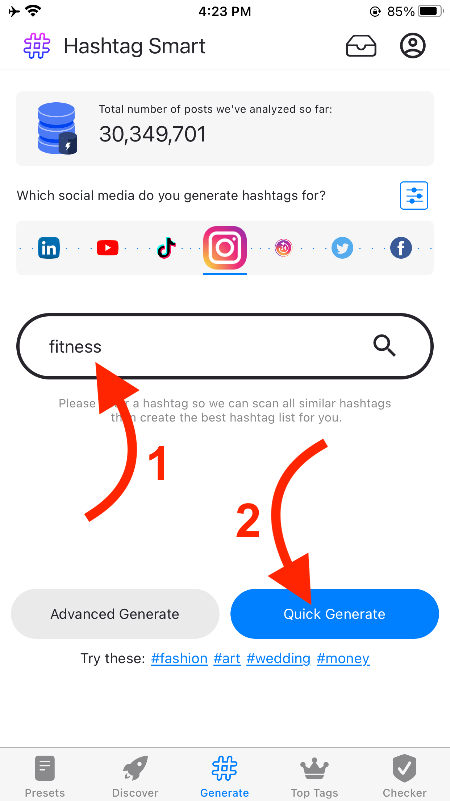

I just wanted to welcome you to Hashtags Manager app and show you how our AI-based algorithm will help you get the most likes! The main feature of the app is "Quick Generate"! You will enter a main hashtag, then our algorithm will generate 30 most related hashtags to your main hashtag.
Our AI-based algorithm scans millions of posts and hashtags to find you the most related hashtags and hashtags that go together. For example, you will enter #fitness hashtag, then the algorithm will generate 30 hashtags like #gym #sport #healthylife #gymlife #cardio...

Wait, there is more! You will also see more hashtag groups containing #fitness hashtag generated by other users. Here you can see what hashtags other users are using. You can also see how popular these hashtag groups are by seeing how many times they are copied and saved. You can just tap on any hashtag on the hashtag groups to collect them to your hashtag pool! I will explain how hashtag pools are working in detail later. See you!
Jessica Tames